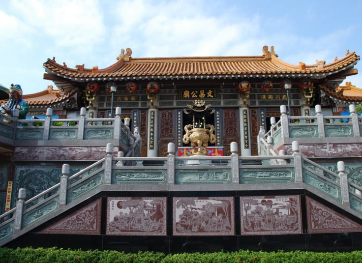

台北文昌宮
 台北市民生西路45巷9弄2-1號
台北市民生西路45巷9弄2-1號
主祀文昌帝君。
台北著名供奉文昌帝君的廟宇，相傳在日治時期， 一位唐山商人來臺經商，後來生意不順利，欲返回中國時， 將所奉祀之神像留於台北雙連之叢林中，被一婦人發現迎回奉祀， 但不知為何方神聖。後由一位對道教頗有研究之老翁仔細端詳， 發現此為文昌帝君之神像，邀集鄉民在附近建廟奉祀， 應考學生多往祭拜，靈蹟不斷，因而成名。
台北著名供奉文昌帝君的廟宇，相傳在日治時期， 一位唐山商人來臺經商，後來生意不順利，欲返回中國時， 將所奉祀之神像留於台北雙連之叢林中，被一婦人發現迎回奉祀， 但不知為何方神聖。後由一位對道教頗有研究之老翁仔細端詳， 發現此為文昌帝君之神像，邀集鄉民在附近建廟奉祀， 應考學生多往祭拜，靈蹟不斷，因而成名。


台中文昌廟
台中市北屯區昌平路二段41號
主祀文昌帝君。
生長在台中的朋友，一定不會忘記在北屯昌平路上佇立著一間古廟，
這可是每個學生都會擁有的童年回憶。民眾時常在考試季時慕名而來，
點上一盞酥油燈，祈求自己能有好考運，這也成為廟裡的特色之一。
清領時期，當地仕紳「文蔚社」及「文炳社」先後籌組讀書會，
開設私塾教授漢學；而後建立廟宇，並在此設立學堂教育當地子弟；
政府於1985年將其定為三級古蹟。
生長在台中的朋友，一定不會忘記在北屯昌平路上佇立著一間古廟，
這可是每個學生都會擁有的童年回憶。民眾時常在考試季時慕名而來，
點上一盞酥油燈，祈求自己能有好考運，這也成為廟裡的特色之一。
清領時期，當地仕紳「文蔚社」及「文炳社」先後籌組讀書會，
開設私塾教授漢學；而後建立廟宇，並在此設立學堂教育當地子弟；
政府於1985年將其定為三級古蹟。


台南孔子廟
臺南市中西區南門路2號
主祀至聖先師。
台南孔廟建於明鄭時期，是台灣最早的文廟；
而在清領初期更是全台童生唯一入學之所，也有「全臺首學」之稱。
於1983年時，政府將其定為一級古蹟。
廟中大成殿供奉孔子為主神，兩側則供奉孔子的學生四配
（顏子、子思、曾子及孟子）及十二哲，
想要瞻仰古聖先賢的學生們，可以來這裡看看曾經活躍在書上的先人們。
除了參拜之外，建築風格也是值得欣賞的部分，
台南孔廟佔地不小，其格局設計仍保留以前的
「左學右廟」、「前殿後閣」，尤其大成殿中沒有柱子與迴廊，
僅以厚牆外的排樑支撐，此種結構堪稱中國建築美學。
台南孔廟建於明鄭時期，是台灣最早的文廟；
而在清領初期更是全台童生唯一入學之所，也有「全臺首學」之稱。
於1983年時，政府將其定為一級古蹟。
廟中大成殿供奉孔子為主神，兩側則供奉孔子的學生四配
（顏子、子思、曾子及孟子）及十二哲，
想要瞻仰古聖先賢的學生們，可以來這裡看看曾經活躍在書上的先人們。
除了參拜之外，建築風格也是值得欣賞的部分，
台南孔廟佔地不小，其格局設計仍保留以前的
「左學右廟」、「前殿後閣」，尤其大成殿中沒有柱子與迴廊，
僅以厚牆外的排樑支撐，此種結構堪稱中國建築美學。

宜蘭文昌廟
宜蘭市中山里文昌路66號
主祀文昌帝君與關聖帝君。
自古以來就是重要的文化教育發展地。仰山書院培育了許多文人，
更是北管福祿派重要的推廣中心。現在則是當地學子的守護神，
每到考季就能看到滿桌的礦泉水，還一匹日本籍的赤兔馬一起守護居民。
宜蘭文昌廟的影響力有多大，光是廟前這條路被命名為文昌路就曉得它的重要性。
1812年噶瑪蘭廳通判楊廷理見宜蘭城，也在文昌廟創立仰山書院，
成為東部地區首座書院。由於崇敬南宋理學大師，也是福建儒學開山鼻祖的楊時，
加上宜蘭外海有龜山島，而將書院命名為「仰山」，並擔任山長，
開啟仰山書院帶動宜蘭文教發展的第一步。
自古以來就是重要的文化教育發展地。仰山書院培育了許多文人，
更是北管福祿派重要的推廣中心。現在則是當地學子的守護神，
每到考季就能看到滿桌的礦泉水，還一匹日本籍的赤兔馬一起守護居民。
宜蘭文昌廟的影響力有多大，光是廟前這條路被命名為文昌路就曉得它的重要性。
1812年噶瑪蘭廳通判楊廷理見宜蘭城，也在文昌廟創立仰山書院，
成為東部地區首座書院。由於崇敬南宋理學大師，也是福建儒學開山鼻祖的楊時，
加上宜蘭外海有龜山島，而將書院命名為「仰山」，並擔任山長，
開啟仰山書院帶動宜蘭文教發展的第一步。